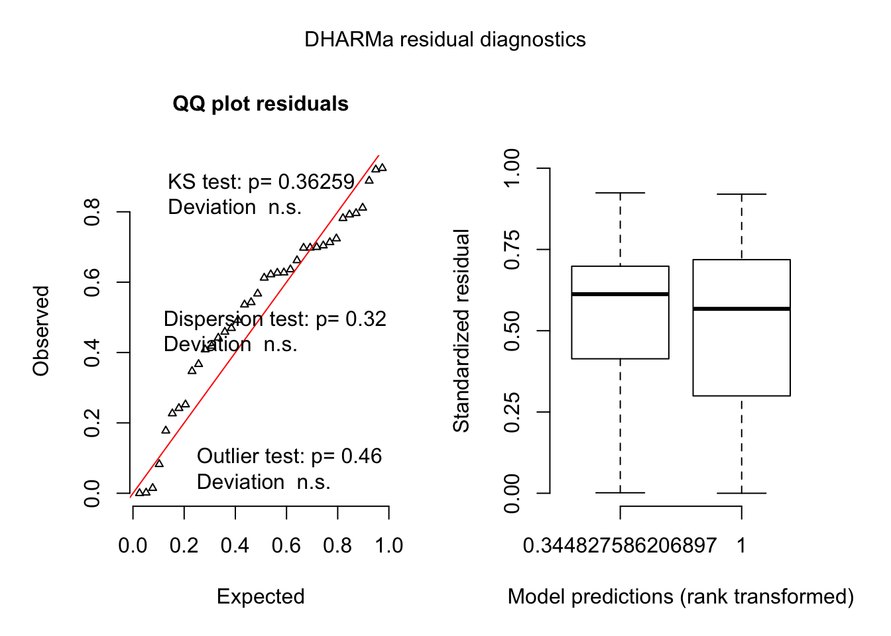

Dryas activity between time periods
To see whether there was a difference in the total number of choices a butterfly made at a particular time period I XYZ.
Model
dryas.activity.model =
glmer(total.activity ~ time.of.day + (1 | cage/id),
data= data, family = poisson)Results
data = data %>% group_by(id) %>% mutate(total.activity = (n.correct.training+n.incorrect.training))
data %>% group_by(time.of.day) %>% summarise(mean(total.activity))## # A tibble: 2 x 2
## time.of.day `mean(total.activity)`
## * <fct> <dbl>
## 1 1morning 46.1
## 2 2afternoon 61.9Model Residuals
